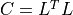
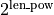

qnm_filter package¶
Submodules¶
qnm_filter.Network module¶
Defining the core Network class.
- class qnm_filter.Network.Network(**kws)[source]¶
Bases:
objectPerform a ringdown filter analysis. Stores all the needed information.
Example usage:
import qnm_filter input = dict(model_list = [(2, 2, 0)], #l, m, n # trucation time (geocenter, in second) t_init = 1126259462.4083147+2.0*1e-3, # length of the analysis window (in second) window_width = 0.2, # sampling rate after conditioning (in Hz) srate = 2048, # sky localization ra = 1.95, dec = -1.27, # lower limit of the high-pass filter (in Hz) flow = 20) fit = qnm_filter.Network(**input) fit.import_data('H-H1_GWOSC_16KHZ_R1-1126259447-32.hdf5') fit.detector_alignment(**input) fit.condition_data('original_data', **input) fit.compute_acfs('original_data') fit.cholesky_decomposition() fit.first_index() fit.add_filter(mass=68.5, chi=0.69, **input) final_likelihood = fit.compute_likelihood(apply_filter=True)
- Attributes:
- original_datadict
dictionary containing unfiltered data for each detector.
- filtered_datadict
dictionary containing filtered data for each detector.
- acfsdict
dictionary containing autocovariance functions for each detector.
- start_timesdict
dictionary containing trucation time (start time of analysis window) for each detector, determined by specified sky location.
- inverse_cholesky_Ldict
dictionary containing the inverse of Cholesky-decomposition.
- i0_dictdict
dictionary containing the array index of the first time of the analysis window. The computation of
i0_dictneeds to be after the conditioning part.- rafloat
source right ascension, in radian.
- decfloat
source declination, in radian.
- t_initfloat
trucation time (start time of analysis window) at geocenter.
- window_widthfloat
width of analysis window
Methods
add_filter(**kwargs)Apply rational filters to
Network.original_dataand store the filtered data inNetwork.filtered_data.Compute the Cholesky-decomposition of covariance matrix , and the inverse of
 .
.compute_SNR(data, template, ifo, optimal)Compute matched-filter/optimal SNR.
compute_acfs(attr_name, **kws)Compute ACFs with data named attr_name.
compute_likelihood([apply_filter])Compute likelihood for interferometer network.
condition_data(attr_name, **kwargs)Condition data for all interferometers.
detector_alignment(**kwargs)Set the start times of analysis window at different interferometers
Network.start_timesusing sky location.Find the index of a data point that is closet to the choosen start time
Network.start_timesfor each interferometer.import_data_array(attr_name, data, time, ifo)Add the inputted data to a dynamic/existing attribute.
import_ligo_data(filename)Read data from disk and store data in
Network.original_data.likelihood_vs_mass_spin(M_est, chi_est, **kwargs)Compute likelihood for the given mass and spin.
Shift the first index of the analysis window by n.
truncate_data(network_data)Select segments of the given data that are in analysis window.
- add_filter(**kwargs)[source]¶
Apply rational filters to
Network.original_dataand store the filtered data inNetwork.filtered_data.
- cholesky_decomposition() None[source]¶
Compute the Cholesky-decomposition of covariance matrix , and the inverse of
.
- compute_SNR(data, template, ifo, optimal) float[source]¶
Compute matched-filter/optimal SNR.
- Parameters:
- datandarray
Time-series data
- templatendarray
Ringdown template
- ifostring
Name of interferometer
- optimal: bool
Compute optimal SNR
- compute_acfs(attr_name, **kws) None[source]¶
Compute ACFs with data named attr_name.
- Parameters:
- attr_namestring
Name of data for ACF estimation
- compute_likelihood(apply_filter=True) float[source]¶
Compute likelihood for interferometer network.
- Returns:
- likelihoodfloat
The likelihood of interferometer network
- condition_data(attr_name, **kwargs) None[source]¶
Condition data for all interferometers.
- Parameters:
- attr_namestring
Name of data to be conditioned
- detector_alignment(**kwargs) None[source]¶
Set the start times of analysis window at different interferometers
Network.start_timesusing sky location.- Parameters:
- t_initfloat
The start time of analysis window at the geocenter.
- first_index()[source]¶
Find the index of a data point that is closet to the choosen start time
Network.start_timesfor each interferometer.
- import_data_array(attr_name, data, time, ifo) None[source]¶
Add the inputted data to a dynamic/existing attribute.
- Parameters:
- attr_namestring
Name of the dynamic attribute
- datandarray
Inputted data
- timendarray
Time stamps
- ifostring
Name of interferometer
- import_ligo_data(filename) None[source]¶
Read data from disk and store data in
Network.original_data.Supports only HDF5 files downloaded from https://www.gw-openscience.org.
- Parameters:
- filenamestring
name of file
- likelihood_vs_mass_spin(M_est, chi_est, **kwargs) float[source]¶
Compute likelihood for the given mass and spin.
- Parameters:
- M_estfloat
in solar mass, mass of rational filters
- chi_estfloat
dimensionless spin of rational filters
- Returns:
- The corresponding likelihood.
- property sampling_n: int¶
Number of data points in analysis window.
- Returns:
- int
Lenght of truncated data array
qnm_filter.bilby_helper module¶
Wrapping up some Bilby functions for convenience
- qnm_filter.bilby_helper.bilby_get_strain(ifo)[source]¶
Get strain data from Bilby’s Interferometer and store the result in Data.
- Parameters:
- ifobilby.gw.detector.Interferometer
An instance of bilby.gw.detector.Interferometer
- Returns:
- Data
strain data
- qnm_filter.bilby_helper.bilby_injection(ifo, NR_injection_into_Bilby, **injection_parameters)[source]¶
Inject a GW strain into noise
- Parameters:
- ifobilby.gw.detector.Interferometer
An instance of bilby.gw.detector.Interferometer
- NR_injection_into_Bilbyfunction
waveform to be injected.
Example:
def NR_injection_into_Bilby(time, **waveform_kwargs): return {'plus': foo, 'cross': bar}
- Returns:
- bilby.gw.detector.Interferometer
An instance of bilby.gw.detector.Interferometer
- qnm_filter.bilby_helper.set_bilby_ifo(Noise, sampling_frequency, duration, start_time, zero_noise=False, name=None, length=0, latitude=0, longitude=0, elevation=0, xarm_azimuth=0, yarm_azimuth=90)[source]¶
Construct a Bilby’s Interferometer instance given the
Noiseclass.- Parameters:
- Noise
Noise An instance of
Noise- sampling_frequencyfloat
in Hz
- durationfloat
in second. The duration of the generated time series
- start_timefloat
in second. The start time of the generated time series
- zero_noisebool, optional
if ture, returns pure waveform strain w/o noise, by default False
- namestring, optional
name of interferometer, by default None
- lengthint, optional
length of interferometer, by default 0
- latitudeint, optional
latitude of interferometer, by default 0
- longitudeint, optional
longitude of interferometer, by default 0
- elevationint, optional
elevation of interferometer, by default 0
- xarm_azimuthint, optional
azimuth angle of the x-arm of interferometer, by default 0
- yarm_azimuthint, optional
azimuth angle of the y-arm of interferometer, by default 90
- Noise
- Returns:
- bilby.gw.detector.Interferometer
An instance of bilby.gw.detector.Interferometer
- qnm_filter.bilby_helper.set_bilby_predefined_ifo(name, sampling_frequency, duration, start_time, zero_noise=False)[source]¶
Construct a Bilby’s Interferometer instance with its internal PSD.
- Parameters:
- namestring
name of interferometer, e.g., “H1” and “L1”
- sampling_frequencyfloat
in Hz
- durationfloat
in second. The duration of the generated time series
- start_timefloat
in second. The start time of the generated time series
- zero_noisebool, optional
if ture, returns pure waveform strain w/o noise, by default False
- Returns:
- bilby.gw.detector.Interferometer
An instance of bilby.gw.detector.Interferometer
qnm_filter.gw_data module¶
Utilities to manipulate GW data and rational filters.
- class qnm_filter.gw_data.Data(*args, ifo=None, **kwargs)[source]¶
Bases:
SeriesContainer for gravitational data.
- Attributes:
- ifostr
name of interferometer.
Methods
abs()Return a Series/DataFrame with absolute numeric value of each element.
add(other[, level, fill_value, axis])Return Addition of series and other, element-wise (binary operator add).
add_prefix(prefix)Prefix labels with string prefix.
add_suffix(suffix)Suffix labels with string suffix.
agg([func, axis])Aggregate using one or more operations over the specified axis.
aggregate([func, axis])Aggregate using one or more operations over the specified axis.
align(other[, join, axis, level, copy, ...])Align two objects on their axes with the specified join method.
all([axis, bool_only, skipna, level])Return whether all elements are True, potentially over an axis.
any(*[, axis, bool_only, skipna, level])Return whether any element is True, potentially over an axis.
append(to_append[, ignore_index, ...])Concatenate two or more Series.
apply(func[, convert_dtype, args])Invoke function on values of Series.
argmax([axis, skipna])Return int position of the largest value in the Series.
argmin([axis, skipna])Return int position of the smallest value in the Series.
argsort([axis, kind, order])Return the integer indices that would sort the Series values.
asfreq(freq[, method, how, normalize, ...])Convert time series to specified frequency.
asof(where[, subset])Return the last row(s) without any NaNs before where.
astype(dtype[, copy, errors])Cast a pandas object to a specified dtype
dtype.at_time(time[, asof, axis])Select values at particular time of day (e.g., 9:30AM).
autocorr([lag])Compute the lag-N autocorrelation.
backfill(*[, axis, inplace, limit, downcast])Synonym for
DataFrame.fillna()withmethod='bfill'.between(left, right[, inclusive])Return boolean Series equivalent to left <= series <= right.
between_time(start_time, end_time[, ...])Select values between particular times of the day (e.g., 9:00-9:30 AM).
bfill(*[, axis, inplace, limit, downcast])Synonym for
DataFrame.fillna()withmethod='bfill'.bool()Return the bool of a single element Series or DataFrame.
catalias of
CategoricalAccessorclip([lower, upper, axis, inplace])Trim values at input threshold(s).
combine(other, func[, fill_value])Combine the Series with a Series or scalar according to func.
combine_first(other)Update null elements with value in the same location in 'other'.
compare(other[, align_axis, keep_shape, ...])Compare to another Series and show the differences.
condition([t0, srate, flow, fhigh, trim, ...])Condition data.
convert_dtypes([infer_objects, ...])Convert columns to best possible dtypes using dtypes supporting
pd.NA.copy([deep])Make a copy of this object's indices and data.
corr(other[, method, min_periods])Compute correlation with other Series, excluding missing values.
count([level])Return number of non-NA/null observations in the Series.
cov(other[, min_periods, ddof])Compute covariance with Series, excluding missing values.
cummax([axis, skipna])Return cumulative maximum over a DataFrame or Series axis.
cummin([axis, skipna])Return cumulative minimum over a DataFrame or Series axis.
cumprod([axis, skipna])Return cumulative product over a DataFrame or Series axis.
cumsum([axis, skipna])Return cumulative sum over a DataFrame or Series axis.
describe([percentiles, include, exclude, ...])Generate descriptive statistics.
diff([periods])First discrete difference of element.
div(other[, level, fill_value, axis])Return Floating division of series and other, element-wise (binary operator truediv).
divide(other[, level, fill_value, axis])Return Floating division of series and other, element-wise (binary operator truediv).
divmod(other[, level, fill_value, axis])Return Integer division and modulo of series and other, element-wise (binary operator divmod).
dot(other)Compute the dot product between the Series and the columns of other.
drop([labels, axis, index, columns, level, ...])Return Series with specified index labels removed.
drop_duplicates(*[, keep, inplace])Return Series with duplicate values removed.
droplevel(level[, axis])Return Series/DataFrame with requested index / column level(s) removed.
dropna(*[, axis, inplace, how])Return a new Series with missing values removed.
duplicated([keep])Indicate duplicate Series values.
eq(other[, level, fill_value, axis])Return Equal to of series and other, element-wise (binary operator eq).
equals(other)Test whether two objects contain the same elements.
ewm([com, span, halflife, alpha, ...])Provide exponentially weighted (EW) calculations.
expanding([min_periods, center, axis, method])Provide expanding window calculations.
explode([ignore_index])Transform each element of a list-like to a row.
factorize([sort, na_sentinel, use_na_sentinel])Encode the object as an enumerated type or categorical variable.
ffill(*[, axis, inplace, limit, downcast])Synonym for
DataFrame.fillna()withmethod='ffill'.fillna([value, method, axis, inplace, ...])Fill NA/NaN values using the specified method.
filter([items, like, regex, axis])Subset the dataframe rows or columns according to the specified index labels.
first(offset)Select initial periods of time series data based on a date offset.
first_valid_index()Return index for first non-NA value or None, if no non-NA value is found.
floordiv(other[, level, fill_value, axis])Return Integer division of series and other, element-wise (binary operator floordiv).
ge(other[, level, fill_value, axis])Return Greater than or equal to of series and other, element-wise (binary operator ge).
get(key[, default])Get item from object for given key (ex: DataFrame column).
groupby([by, axis, level, as_index, sort, ...])Group Series using a mapper or by a Series of columns.
gt(other[, level, fill_value, axis])Return Greater than of series and other, element-wise (binary operator gt).
head([n])Return the first n rows.
hist([by, ax, grid, xlabelsize, xrot, ...])Draw histogram of the input series using matplotlib.
idxmax([axis, skipna])Return the row label of the maximum value.
idxmin([axis, skipna])Return the row label of the minimum value.
infer_objects()Attempt to infer better dtypes for object columns.
info([verbose, buf, max_cols, memory_usage, ...])Print a concise summary of a Series.
interpolate([method, axis, limit, inplace, ...])Fill NaN values using an interpolation method.
isin(values)Whether elements in Series are contained in values.
isna()Detect missing values.
isnull()Series.isnull is an alias for Series.isna.
item()Return the first element of the underlying data as a Python scalar.
items()Lazily iterate over (index, value) tuples.
iteritems()Lazily iterate over (index, value) tuples.
keys()Return alias for index.
kurt([axis, skipna, level, numeric_only])Return unbiased kurtosis over requested axis.
kurtosis([axis, skipna, level, numeric_only])Return unbiased kurtosis over requested axis.
last(offset)Select final periods of time series data based on a date offset.
last_valid_index()Return index for last non-NA value or None, if no non-NA value is found.
le(other[, level, fill_value, axis])Return Less than or equal to of series and other, element-wise (binary operator le).
lt(other[, level, fill_value, axis])Return Less than of series and other, element-wise (binary operator lt).
mad([axis, skipna, level])Return the mean absolute deviation of the values over the requested axis.
map(arg[, na_action])Map values of Series according to an input mapping or function.
mask(cond[, other, inplace, axis, level, ...])Replace values where the condition is True.
max([axis, skipna, level, numeric_only])Return the maximum of the values over the requested axis.
mean([axis, skipna, level, numeric_only])Return the mean of the values over the requested axis.
median([axis, skipna, level, numeric_only])Return the median of the values over the requested axis.
memory_usage([index, deep])Return the memory usage of the Series.
min([axis, skipna, level, numeric_only])Return the minimum of the values over the requested axis.
mod(other[, level, fill_value, axis])Return Modulo of series and other, element-wise (binary operator mod).
mode([dropna])Return the mode(s) of the Series.
mul(other[, level, fill_value, axis])Return Multiplication of series and other, element-wise (binary operator mul).
multiply(other[, level, fill_value, axis])Return Multiplication of series and other, element-wise (binary operator mul).
ne(other[, level, fill_value, axis])Return Not equal to of series and other, element-wise (binary operator ne).
nlargest([n, keep])Return the largest n elements.
notna()Detect existing (non-missing) values.
notnull()Series.notnull is an alias for Series.notna.
nsmallest([n, keep])Return the smallest n elements.
nunique([dropna])Return number of unique elements in the object.
pad(*[, axis, inplace, limit, downcast])Synonym for
DataFrame.fillna()withmethod='ffill'.pct_change([periods, fill_method, limit, freq])Percentage change between the current and a prior element.
pipe(func, *args, **kwargs)Apply chainable functions that expect Series or DataFrames.
plotalias of
PlotAccessorpop(item)Return item and drops from series.
pow(other[, level, fill_value, axis])Return Exponential power of series and other, element-wise (binary operator pow).
prod([axis, skipna, level, numeric_only, ...])Return the product of the values over the requested axis.
product([axis, skipna, level, numeric_only, ...])Return the product of the values over the requested axis.
quantile([q, interpolation])Return value at the given quantile.
radd(other[, level, fill_value, axis])Return Addition of series and other, element-wise (binary operator radd).
rank([axis, method, numeric_only, ...])Compute numerical data ranks (1 through n) along axis.
ravel([order])Return the flattened underlying data as an ndarray.
rdiv(other[, level, fill_value, axis])Return Floating division of series and other, element-wise (binary operator rtruediv).
rdivmod(other[, level, fill_value, axis])Return Integer division and modulo of series and other, element-wise (binary operator rdivmod).
reindex(*args, **kwargs)Conform Series to new index with optional filling logic.
reindex_like(other[, method, copy, limit, ...])Return an object with matching indices as other object.
rename([index, axis, copy, inplace, level, ...])Alter Series index labels or name.
rename_axis([mapper, inplace])Set the name of the axis for the index or columns.
reorder_levels(order)Rearrange index levels using input order.
repeat(repeats[, axis])Repeat elements of a Series.
replace([to_replace, value, inplace, limit, ...])Replace values given in to_replace with value.
resample(rule[, axis, closed, label, ...])Resample time-series data.
reset_index([level, drop, name, inplace, ...])Generate a new DataFrame or Series with the index reset.
rfloordiv(other[, level, fill_value, axis])Return Integer division of series and other, element-wise (binary operator rfloordiv).
rmod(other[, level, fill_value, axis])Return Modulo of series and other, element-wise (binary operator rmod).
rmul(other[, level, fill_value, axis])Return Multiplication of series and other, element-wise (binary operator rmul).
rolling(window[, min_periods, center, ...])Provide rolling window calculations.
round([decimals])Round each value in a Series to the given number of decimals.
rpow(other[, level, fill_value, axis])Return Exponential power of series and other, element-wise (binary operator rpow).
rsub(other[, level, fill_value, axis])Return Subtraction of series and other, element-wise (binary operator rsub).
rtruediv(other[, level, fill_value, axis])Return Floating division of series and other, element-wise (binary operator rtruediv).
sample([n, frac, replace, weights, ...])Return a random sample of items from an axis of object.
searchsorted(value[, side, sorter])Find indices where elements should be inserted to maintain order.
sem([axis, skipna, level, ddof, numeric_only])Return unbiased standard error of the mean over requested axis.
set_axis(labels, *[, axis, inplace, copy])Assign desired index to given axis.
set_flags(*[, copy, allows_duplicate_labels])Return a new object with updated flags.
shift([periods, freq, axis, fill_value])Shift index by desired number of periods with an optional time freq.
skew([axis, skipna, level, numeric_only])Return unbiased skew over requested axis.
slice_shift([periods, axis])Equivalent to shift without copying data.
sort_index(*[, axis, level, ascending, ...])Sort Series by index labels.
sort_values(*[, axis, ascending, inplace, ...])Sort by the values.
sparsealias of
SparseAccessorsqueeze([axis])Squeeze 1 dimensional axis objects into scalars.
std([axis, skipna, level, ddof, numeric_only])Return sample standard deviation over requested axis.
stralias of
StringMethodssub(other[, level, fill_value, axis])Return Subtraction of series and other, element-wise (binary operator sub).
subtract(other[, level, fill_value, axis])Return Subtraction of series and other, element-wise (binary operator sub).
sum([axis, skipna, level, numeric_only, ...])Return the sum of the values over the requested axis.
swapaxes(axis1, axis2[, copy])Interchange axes and swap values axes appropriately.
swaplevel([i, j, copy])Swap levels i and j in a
MultiIndex.tail([n])Return the last n rows.
take(indices[, axis, is_copy])Return the elements in the given positional indices along an axis.
to_clipboard([excel, sep])Copy object to the system clipboard.
to_csv([path_or_buf, sep, na_rep, ...])Write object to a comma-separated values (csv) file.
to_dict([into])Convert Series to {label -> value} dict or dict-like object.
to_excel(excel_writer[, sheet_name, na_rep, ...])Write object to an Excel sheet.
to_frame([name])Convert Series to DataFrame.
to_hdf(path_or_buf, key[, mode, complevel, ...])Write the contained data to an HDF5 file using HDFStore.
to_json([path_or_buf, orient, date_format, ...])Convert the object to a JSON string.
to_latex([buf, columns, col_space, header, ...])Render object to a LaTeX tabular, longtable, or nested table.
to_list()Return a list of the values.
to_markdown([buf, mode, index, storage_options])Print Series in Markdown-friendly format.
to_numpy([dtype, copy, na_value])A NumPy ndarray representing the values in this Series or Index.
to_period([freq, copy])Convert Series from DatetimeIndex to PeriodIndex.
to_pickle(path[, compression, protocol, ...])Pickle (serialize) object to file.
to_sql(name, con[, schema, if_exists, ...])Write records stored in a DataFrame to a SQL database.
to_string([buf, na_rep, float_format, ...])Render a string representation of the Series.
to_timestamp([freq, how, copy])Cast to DatetimeIndex of Timestamps, at beginning of period.
to_xarray()Return an xarray object from the pandas object.
tolist()Return a list of the values.
transform(func[, axis])Call
funcon self producing a Series with the same axis shape as self.transpose(*args, **kwargs)Return the transpose, which is by definition self.
truediv(other[, level, fill_value, axis])Return Floating division of series and other, element-wise (binary operator truediv).
truncate([before, after, axis, copy])Truncate a Series or DataFrame before and after some index value.
tshift([periods, freq, axis])Shift the time index, using the index's frequency if available.
tz_convert(tz[, axis, level, copy])Convert tz-aware axis to target time zone.
tz_localize(tz[, axis, level, copy, ...])Localize tz-naive index of a Series or DataFrame to target time zone.
unique()Return unique values of Series object.
unstack([level, fill_value])Unstack, also known as pivot, Series with MultiIndex to produce DataFrame.
update(other)Modify Series in place using values from passed Series.
value_counts([normalize, sort, ascending, ...])Return a Series containing counts of unique values.
var([axis, skipna, level, ddof, numeric_only])Return unbiased variance over requested axis.
view([dtype])Create a new view of the Series.
where(cond[, other, inplace, axis, level, ...])Replace values where the condition is False.
xs(key[, axis, level, drop_level])Return cross-section from the Series/DataFrame.
dt
- condition(t0=None, srate=None, flow=None, fhigh=None, trim=0.25, remove_mean=True)[source]¶
Condition data.
Credit: This function is from git@github.com:maxisi/ringdown.git.
- Returns:
- cond_dataData
conditioned data object.
- property fft_data¶
FFT of gravitational-wave data.
- property fft_freq¶
FFT angular frequency stamps.
- property fft_span: float¶
Span of FFT.
- property time¶
Time stamps.
- property time_interval: float¶
Interval of the time stamps.
- class qnm_filter.gw_data.Filter(chi=None, mass=None, model_list=None)[source]¶
Bases:
objectContainer for rational filters.
- Attributes:
- chifloat
remnant dimensionless spin.
- massfloat
remnant mass, in solar mass.
- model_lista list of dictionaries
quasinormal modes to be filtered.
Methods
mass_unit(mass)Convert mass unit from solar mass to second.
single_filter(normalized_freq, l, m, n)Compute rational filters.
total_filter(freq)The total rational filter that removes the modes stored in
Filter.model_list.- property get_mass: float¶
Return
Filter.mass.
- property get_model_list: list[dict]¶
Return
Filter.model_list.
- property get_spin: float¶
Return
Filter.chi.
- class qnm_filter.gw_data.Noise(ifo=None, **kwargs)[source]¶
Bases:
objectContainer for noise
- Attributes:
- ifostr
name of interferometer
- psdData
one-sided power spectral density
- asdData
amplitude spectral density
- acfData
autocorrelation function
- signalData
time-domain noisy signal
Methods
from_acf()Compute PSD and ASD from ACF
from_asd()Compute PSD and ACF from ASD
from_psd()Compute ASD and ACF from PSD
load_noise_curve(attr_name, filename[, ifo])Read a txt/dat file and store the data in target attribute
attr_name.welch(**kws)Estimate PSD from data using Welch's method.
- property bilby_psd¶
Construct a Bilby PowerSpectralDensity instance.
- load_noise_curve(attr_name, filename, ifo=None)[source]¶
Read a txt/dat file and store the data in target attribute
attr_name. The file should have two columns.- Parameters:
- attr_namestring
name of target attribute, could be psd, asd, or acf.
- filenamestring
the file name to be read.
- ifostring, optional
name of interferometer, by default None
qnm_filter.sxs_helper module¶
Wrapping up some SXS (numerical relativity) functions for convenience
- class qnm_filter.sxs_helper.SXSWaveforms(**kws)[source]¶
Bases:
objectContainer for numerical relativity waveforms, downloaded from SXS catalog https://data.black-holes.org/waveforms/index.html
- Attributes:
- original_datadictionary
dictionary that stores all the GW harmonics
- padded_datadictionary
dictionary that stores all the GW harmonics padded with 0 on both sides. This is mainly for FFT so the time stamp should be evenly spaced, and the total length needs to be a power of 2.
- data_in_sidictionary
dictionary that stores all the GW harmonics that have SI units
- filenamestring
SXS ID, in the format of SXS:BBH:XXXX
- mffloat
remnant mass, in the unit of BBH’s total mass
- chiffloat
remnant dimensionless spin
Methods
get_remnant_data([download])Get remnant mass and dimensionless spin from SXS catalog.
harmonics_to_polarizations(attr_name, iota, ...)Compute two polarizations from GW harmonics stored in attr_name
import_sxs_data(l, m, interpolate[, ...])Download/Load SXS waveforms.
pad_data(partition, len_pow)Pad zeros on both sides of GW harmonics
self.original_data, the final length is scale_to_si(attr_name, mass, distance)Convert GW waveforms stored in attr_name from numerical-relativity's units to SI units.
- property get_bbh_m1¶
Get the mass of the first BH (at a reference time during inspiral)
- property get_bbh_m2¶
Get the mass of the second BH (at a reference time during inspiral)
- property get_bbh_spin1¶
Get the spin vector of the first BH (at a reference time during inspiral)
- property get_bbh_spin2¶
Get the spin vector of the second BH (at a reference time during inspiral)
- get_remnant_data(download=False) None[source]¶
Get remnant mass and dimensionless spin from SXS catalog. Note only spin’s length is returned.
- Parameters:
- downloadbool, optional
download meta data from SXS catalog if ture, by default False
- harmonics_to_polarizations(attr_name, iota, beta, model_list) None[source]¶
Compute two polarizations from GW harmonics stored in attr_name
- Parameters:
- attr_namestring
the name of attribute
- iotafloat
inclination angle of propagation direction, in rad.
- betafloat
azimuthal angle of propagation direction, in rad.
- model_lista list of dictionaries
harmonics to be added
- Returns:
- Dictionary
plus and cross polarizations
- import_sxs_data(l, m, interpolate, extrapolation_order=2, download=False, ti=None, tf=None, delta_t=None) None[source]¶
Download/Load SXS waveforms.
- Parameters:
- lint
GW harmonic index
- mint
GW harmonic index
- interpolatebool
interpolate to desired time stamps if ture, otherwise use sxs’s original data
- extrapolation_orderint, optional
waveform extraploation order, used internally by sxs, by default 2
- downloadbool, optional
download GWs from SXS catalog if ture, by default False
- tifloat, optional
the initial time of desired time stamps, use the first time stamp by default. The strain’s peak is assumed to be at 0.
- tffloat, optional
the final time of desired time stamps, use the last time stamp by default. The strain’s peak is assumed to be at 0.
- delta_tfloat, optional
the step size of desired time stamps, use sxs’s original data by default, whose time stamps may not be even spacing
- Raises:
- ValueError
when the time interpolator cannot find delta_t
- pad_data(partition, len_pow) None[source]¶
Pad zeros on both sides of GW harmonics
self.original_data, the final length is- Parameters:
- partitionint
fraction of zeros to be padded on the left
- len_powint
the final length of padded data is
- scale_to_si(attr_name, mass, distance) None[source]¶
Convert GW waveforms stored in attr_name from numerical-relativity’s units to SI units.
- Parameters:
- attr_namestring
the name of attribute
- massfloat
binary’s total mass, in solar mass. Not to be confused with the remnant mass.
- distancefloat
binary’s luminous intensity, in MPC.
qnm_filter.utility module¶
Useful functions for calculating and plotting data
- qnm_filter.utility.evidence_parallel(self, index_spacing, num_iteration, initial_offset, M_arr, chi_arr, num_cpu=-1, verbosity=False, **kwargs)[source]¶
Compute evidence curve, which is sampled at multiples of the post-downsampling rate self.srate, therefore there is no need to recondition the data set.
- Parameters:
- index_spacingint
the ratio between self.srate and the evidence’s sampling rate
- num_iterationint
number of sampling points for the evidence curve
- initial_offsetint
the index offset of the first evidence data point with respect to self.i0_dict
- M_arrarray-like
array of the values of remnant mass to calculate the likelihood function for
- chi_arrarray-like
array of the values of remnant spin to calculate the likelihood function for
- num_cpuint, optional
integer to be based to Parallel as n_jobs. NOTE: passing a positive integer leads to better performance than -1 but performance differs across machines, by default -1
- verbositybool, optional
print more information, by default False
- Returns:
- Two arrays
time stamps, log-evidence
- qnm_filter.utility.find_credible_region(array2d, num_cpu=-1, target_probability=0.9)[source]¶
Compute the log likelihood contour that encloses the desired probability.
- Parameters:
- array2dndarray
2D array of sampling log likelihood as a function of mass and spin
- num_cpuint, optional
number of CPUs used for parallelization, by default -1
- target_probabilityfloat, optional
desired probability, by default 0.9
- Returns:
- resultfloat
the log likelihood above which has the desired probability.
- Raises:
- ValueError
when the target log likelihood cannot be found.
- qnm_filter.utility.pad_data_for_fft(data, partition, len_pow) None[source]¶
Pad zeros on both sides of data, the final length is
- Parameters:
- dataData
data to be padded
- partitionint
fraction of zeros to be padded on the left
- len_powint
the final length of padded data is
- Returns:
- Data
padded data
- qnm_filter.utility.parallel_compute(self, M_arr, chi_arr, num_cpu=-1, **kwargs)[source]¶
Parallel computation of a function that takes 2 arguments
- Returns:
- reshaped_resultsndarray
2d array of the results with shape (len(x_arr), len(y_arr))
- qnm_filter.utility.project_to_1d(array2d, delta_mass, delta_chi)[source]¶
Project the 2D log likelihood to 1D probability density functions, whose integrations are normalized to be 1.
- Parameters:
- array2dndarray
2D array of sampling log likelihood as a function of mass and spin
- delta_massfloat
step size of mass
- delta_chifloat
step size of chi
- Returns:
- Two ndarrays
probability density functions of mass and spin, both normalized to a total probability of 1.